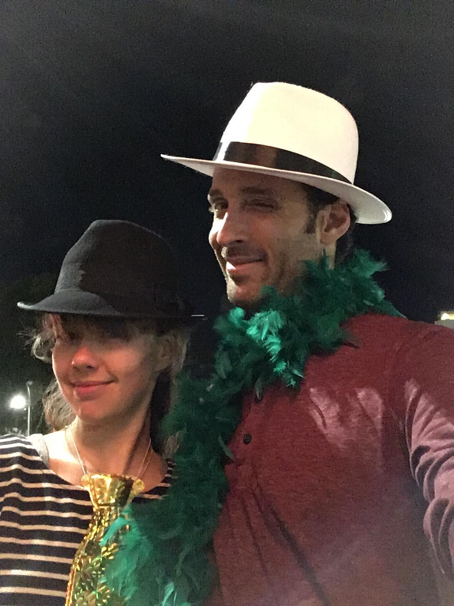
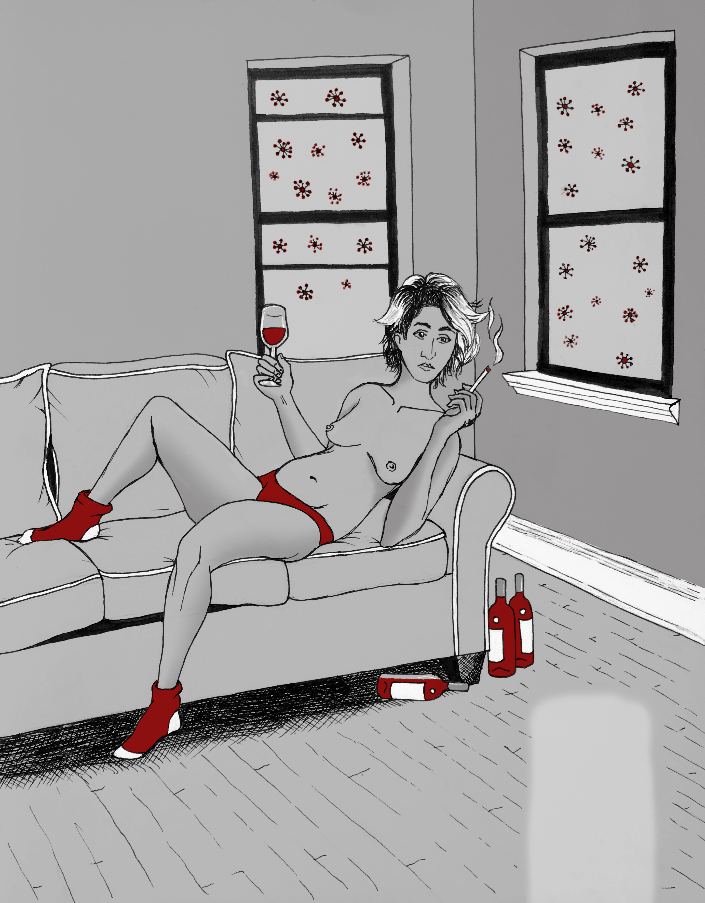
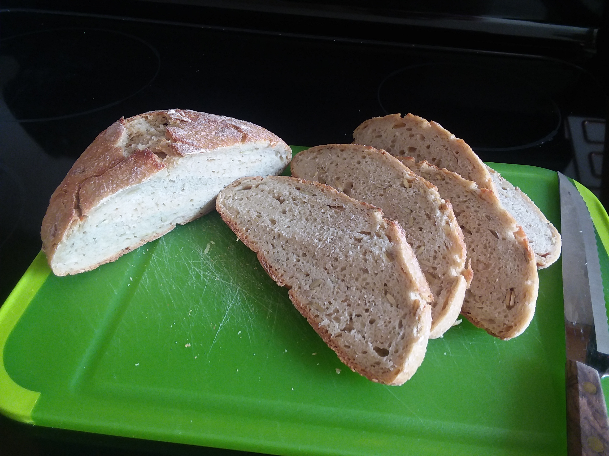
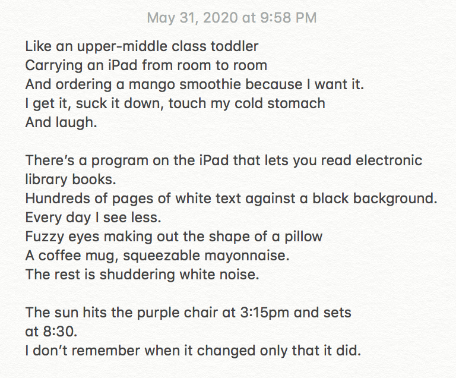
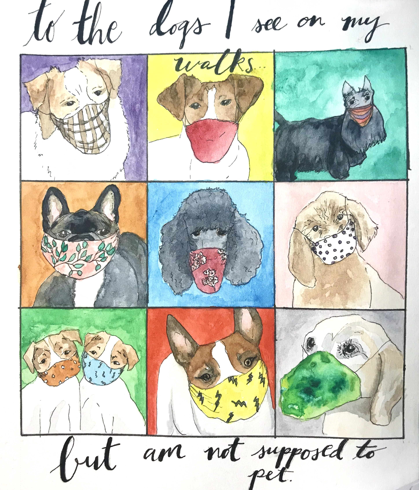
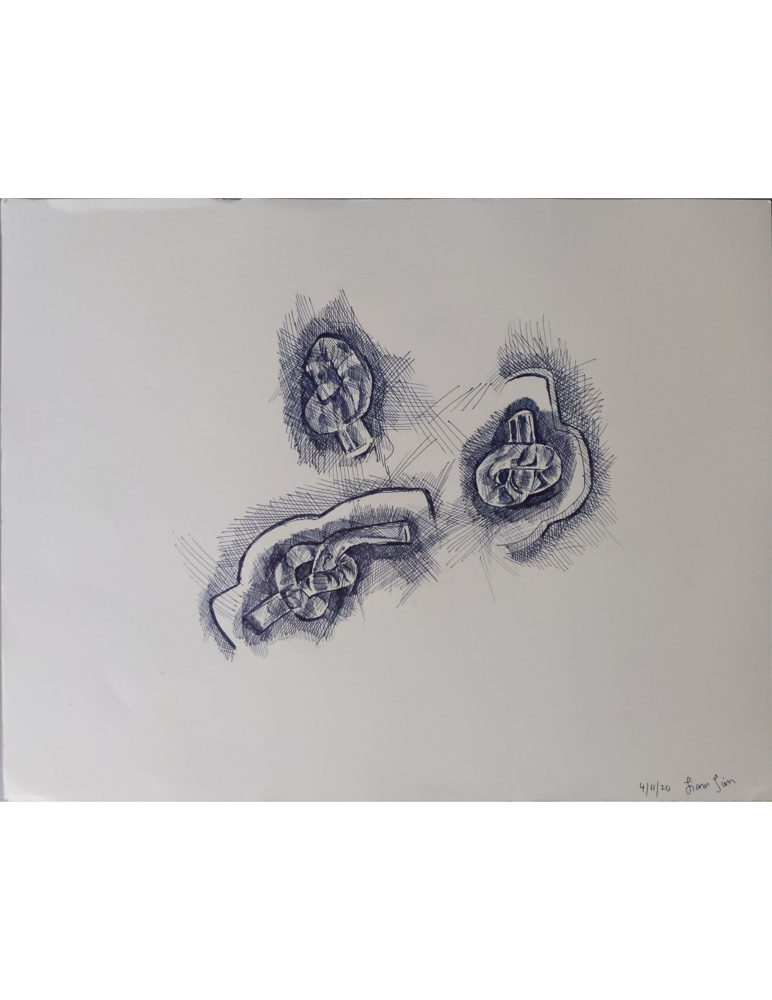
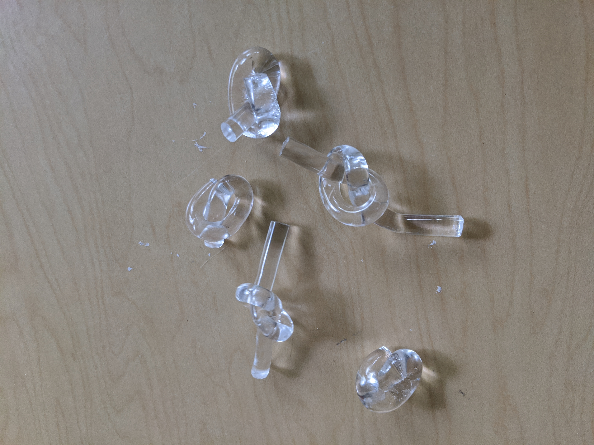
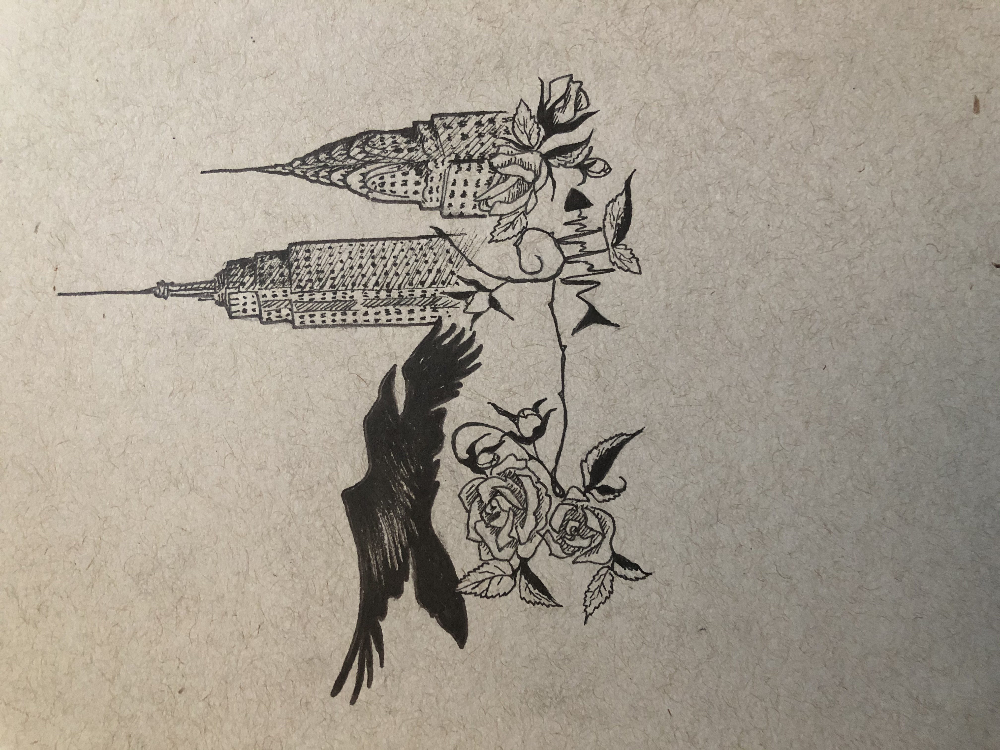

An ode to oats
The humble oat
sown, grown, watered, flourished, picked, plucked, chaffed, stored, hauled, carried, and delivered
milled, stoned, ground, heated, pressed, dried, rolled, chopped, chipped, and packaged
soaked, salted, sweetened, cooked, baked, roasted, toasted, and topped
the majestic oat

Coping in the era of the virus that shall not be named. May edition.
What a crazy time we are all living through. With nurses and doctors begging for PPE and
essential workers of every type facing an enormous death toll, we are all looking for ways to
support the front lines. Some choose donating, others volunteer blood or time. I too have found
my calling. In this time of great need, the comprehensive guide we have all been waiting for is
here!
You may be wondering, how will I pay my bills? How will I get this screaming child to ‘remotely
learn’? Well let me tell you: I don't know. However, if you are a yuppy twenty something year
old, board out of your mind as you work from home, I’ve got just the thing. I have diligently tried
every covid-distraction in existence, and here’s what I've found.
Making lemonade. Have you been wondering, ‘how can I really
take advantage of this forced isolation and confinement’? Or
maybe ‘how can I live out that little-house-on-the-prairie fantasy
of my youth’? Well I’ve got some lemonade you can make out of
them lemons! Well not lemonade … but bread! Perfect for
whiling away the afternoon, and feeling accomplished even
though all you’ve done in weeks is binge watch Tiger King. Now
some may say you are stealing their flour, but live a little! Have
some fun! Break out that flour and learn how to wait. 3 out of 4
for flour fights with roommates, 21 out of 23 for having
something to instagram at the end of an eventless day.
Book clubs on book clubs. Some may say book clubs are for
moms. Others say they’re just for Oprah. But in this time of
great upset and societal upheaval, the club of books is open to
all! In fact, don’t let traditional norms of ‘limited free time’ and
‘conflicting commitments’ hold you back! We all know you have
only free time, and no conflicts to speak of. Join two! Or five!
However many you want. Because this is a time of reflection.
And commitment. And of trying to convince yourself to do something productive some of the
time. 83 out of 100 for coping with one-hundred weeks of solitude. 9 out of 12 for loving in the
time of covid. And #1 way to understand the tale of two viruses. Well, actually just one..
Some friendly competition. If you haven’t tried it yet, Jackbox is a fun-for-all-ages adventure into
the world of trivia, word play, and so much more. An adventure well worth a visit. If you wish you
could be panic-typing words that loosely describe ‘the worst name
for a pinball machine’ and kicking yourself for not being more
whimsical, this is the game for you! You can get out all of that
aggression and competition in a safe group of friends, rather than
plotting to murder your loved ones or roommates who you spend
every waking second with. Really a win win win win! (Four wins!)
We give this coping strategy a 5 out of 7 for originality, a 8 out of 13
for social interaction, and a 10 out of 10 for zoom glitches that make
you lose the round.
Parenthood. Some are exploring bedroom options, but with the nine month
cooking time, the rewards there are simply too delayed for corona-times. So
we’ve found a far better solution. Plant babies! Start by buying more seeds
then any sane person could possibly use; nurture those seeds with some
dirt lugged from your nearest outdoor-store. In a pinch, you can also bring a
bag to each of the planters in your area and siphon that sweet sweet soil
from public coffers. Fill as many containers of any kind with your findings,
and then wait. Like any new parent, there is a germination period that is
anxiety inducing and painful. Will my baby ever blossom? Will it turn out to
be a dud? Will it love me the way I love it? These worries are normal, but
calm down. If your baby makes it into the world, you will have the chance to
overparrent it like every other doting progenitor. Over water it, over weed it,
stare at it every moment of its life. What a joy! 2 out of 2 for bringing
meaning back into your life. 4 out of 5 for warmly welcoming the next
generation into this ever-warming, coronavirus-infested world.
Can’t get enough? New reviews available every week! Don’t forget to subscribe, follow, etc etc
etc. We know you have nothing else to do. See you next time!
xx Corona-copers anon
Stasis
Inactivity or equilibrium
Not moving forward
Not moving backward
Doesn't mean balanced
Doesn't mean still
In stasis we churn
Or I churn
Transforming my own matter
No control
No indication of what has changed
It changes too completely
Leaving no evidence of what is different

It seems a mark of the 21st century that relationships are made and sustained at greater and greater distances. [Thank you technology.] An acute phenomenon of relating to people second hand rather than first. Ameliorated by the 2020 pandemic, the second becomes first. Distanced contact becomes the preferred form – at least temporarily. Here we see how the balcony becomes a driver of connection, and simultaneously a bubble. A space of freedom and confinement. A space of joy and melancholy. A space to safely bond with another.



